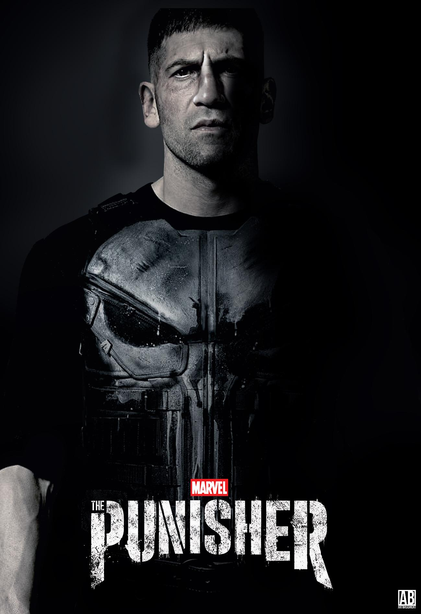
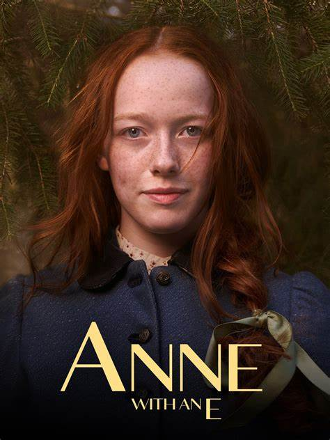
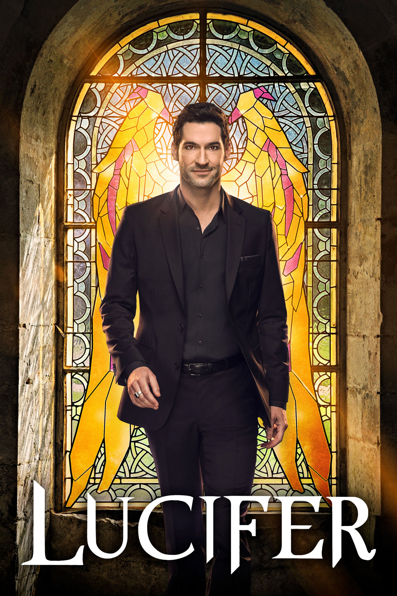
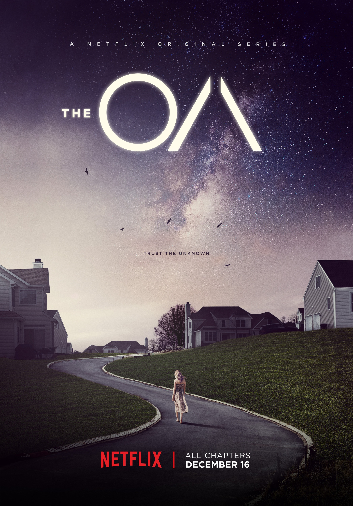

The Punisher: Basada en el personaje de Marvel, esta serie de acción y drama sigue las aventuras del vigilante Frank Castle mientras lucha contra el crimen en Nueva York.
Anne with an E: Una adaptación de la novela "Anne of Green Gables," esta serie narra las experiencias de Anne Shirley, una joven optimista y creativa, mientras se adapta a la vida en la Isla del Príncipe Eduardo.
Lucifer: Esta serie sigue a Lucifer Morningstar, el diablo, mientras abandona el infierno para vivir en Los Ángeles y ayudar a resolver crímenes junto a una detective.
The OA: Un misterioso drama de ciencia ficción que sigue a Prairie Johnson, una mujer que regresa a su hogar después de desaparecer durante siete años, pero con poderes inexplicables.
